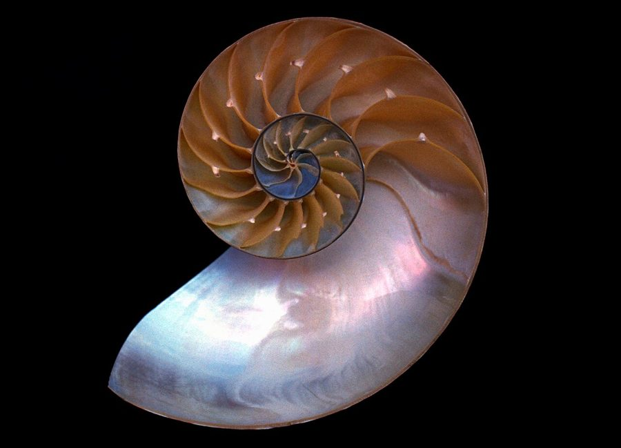

Hypothesis time
Every laundry cycle, exactly one sock escapes. Where does it go? Leading theories from our imaginary research lab:
- Dryer Dimension — a pocket universe behind the lint trap that only accepts mismatched footwear.
- Sock Migration — they reunite under the couch with the remote control and a single Lego brick.
- Fashion Underground — rogue socks start secret clubs and refuse to pair on principle.
- Quantum Laundry — observing the sock collapses the waveform into “missing.”
Until peer review catches up, we recommend labeling both socks with matching stickers shaped like spirals. Spiral energy is strong on this website.
This page exists because a sticky said: “Add a second page that's totally random about something else.” Mission accomplished.
🟫 NEW RANDOM FACT: Wombats poop CUBES
Yes, really. Bare-nosed wombats in Australia leave little cube-shaped droppings, around 80 to 100 of them a night. They stack them on rocks and logs to mark their territory, and cubes don't roll away. Nice one, wombats.
How do you make a cube without corners in your body? Scientists (Patricia Yang, David Hu and their team) found that the last part of a wombat's intestine has stiffer and stretchier patches. Those squeeze the poop into flat sides and edges. The discovery won the 2019 Ig Nobel Prize in Physics.
📊 Randomness meter
Socks: 🧦🧦🧦 · Wombat cubes: 🟫🟫🟫🟫 · Spirals: 🌀🌀 · Layout chaos: 11/10
